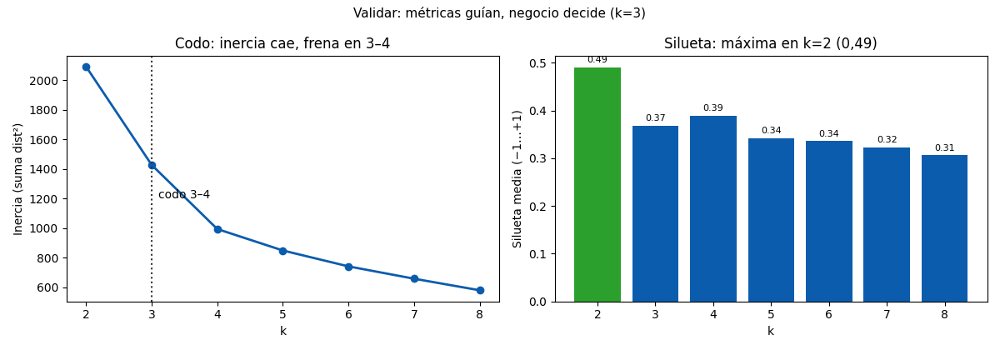

Bloque F · Clustering · Lección 0031 · mié 4 nov
Validar grupos: codo, silueta y criterio
Win de hoy: elegir k con números: codo en 3–4, silueta máxima en k=2 (0,49), y k=3 defendido por negocio (solo 19 siluetas negativas).
1 · Codo: dónde deja de valer la pena
La inercia (2.093 → 1.428 → 993 → 848 → …) siempre baja con k: más grupos = más cerca del centro. El codo marca dónde frena la ganancia: acá 3–4. Ojo: el codo es visual, no teorema; dos analistas ven dos codos.
2 · Silueta: cada punto vota (−1…+1)
La silueta compara distancia a su grupo vs al vecino más cercano: 1 = bien puesto, −1 = mudanza urgente. Promedios: k=2 → 0,49 (máximo), k=3 → 0,37, k=4 → 0,39. En k=3 por grupo: nuevitos 0,53 (compactos), medios 0,36, veteranos 0,33, con solo 19 negativas en 1436: grupos sanos.
3 · Métricas vs negocio (y límites)
Silueta premia k=2 (nuevos vs resto: dos nubes nítidas), el codo sugiere 3–4, el negocio cuenta 3 edades. Elegimos 3: las métricas guían, el dominio decide. Límites honestos: silueta ama esferas (castiga formas DBSCAN), el codo es subjetivo, y todo k debe chequear estabilidad (otras semillas, mismos grupos: con números en 0051, mar 10) antes de presentarse.
4 · Figura: codo y siluetas

Regenerar la figura (mismo resultado versionado en assets/img/toyota/):
python scripts/make_figures.py --only validar-grupos-codo-silueta5 · Quiz (auto-chequeo inmediato)
6 · Fuente primaria y cierre
Para profundizar (1 fuente): Tan, Steinbach & Kumar, Introduction to Data Mining — capítulo de validación de clustering (dmbook, también en RESOURCES.md del curso).
Orden Bloque F: cerrá en la lección 0051 (mar 10: calidad y ventajas, cierre Bloque F).
¿Algo no quedó claro? Preguntame al agente: leer tu codo, interpretar siluetas negativas, o defender tu k. Esa pregunta vale más que releer.